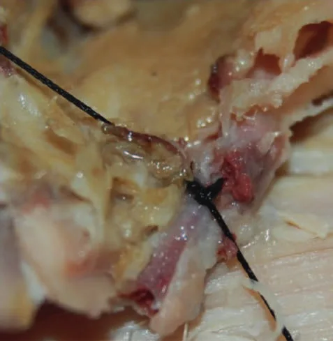
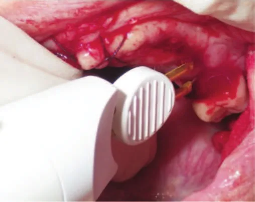

نسخه استخراجشده؛ ترجمه یا تأیید علمی انجام نشده است. وضعیت: captured
در برابر خونریزی حین عمل، اقدامها ترتیب مشخصی دارند و باید از مرحلهی اول شروع کنی.
مرحلهی اول — فشار مستقیم و وضعیت بیمار. اگر خونریزی قابلتوجه حین عمل رخ دهد، درمان ایدهآل اعمال فوری فشار به محل جراحی است. سادهترین و اغلب مؤثرترین اقدام. فشار را دستکم ۳ تا ۵ دقیقه نگه دار و گاز را زود برندار تا لخته کنده نشود؛ بیمار را هم از حالت درازکش به وضعیت نشسته ببر، چون وقتی سر پایینتر از قلب است خونریزی بیشتر میشود.
و برای نواحی خاص، فشار جهتدار دارد:
• خونریزی از شریان سابمنتال را میتوان با فشار انگشت روی لبهی تحتانی مندیبل کاهش داد.
• خونریزی شریان مایلوهایوئید را میتوان با فشار انگشت در امتداد سطح مدیال مندیبل کنترل کرد.
• برای کند کردن خونریزی سابلینگوال: فشار دودستی — گاز ۴×۴ روی سطح لینگوال مندیبل، همزمان با فشار رو به بالا از خارج دهان.
کمککنندهها: گاز آغشته به لیدوکائین میتواند بهعنوان پانسمان فشاری برای کاهش خونریزی به کار رود.
پیشگیری با مدیریت بافت — تکنیک tie-back. بخیهی غیرمستقیم بافت لینگوال مندیبل بیدندان در ناحیهی کانین تا مولر، سه کار همزمان میکند: خونریزی را کم میکند، کنار زدن بافت را آسان میکند، و از تروما به بافت جلوگیری میکند. و یادت باشد در بلند کردن فلپ لینگوال و دستکاری بافت لینگوال باید محتاط بود.
مرحلهی بعد — بستن رگ. تکنیک موفقتر در کنترل خونریزی، استفاده از هموستاتهای نوکظریف (هموستات کِلی) و لیگاتور کردن رگ خونریزیدهنده با نخ بخیه است. رگ گیرافتاده در کلمپ را میتوان با بخیه بست. لیگاتور مستقیم معمولاً مؤثرترین راه قطع جریان شریانی است، هرچند دیدن و در دسترس گرفتن رگ گاهی بسیار دشوار است.
و معیار عددی تصمیم: معمولاً خونریزی از رگهایی با قطر ۲ میلیمتر یا بیشتر باید لیگاتور شود. یعنی برای رگهای بزرگ، فشار بهتنهایی راهحل نیست.
هندسهی دقیق بخیهی لیگاتور: بخیه با ورود به بافت در فاصلهی دستکم ۴ میلیمتر از رگ خونریزیدهنده، عبور از ۳ میلیمتر زیر رگ، و خروج در ۴ میلیمتر آنسو گذاشته میشود؛ روش ترجیحی بخیهی figure-eight است.
انتخاب نخ: نخی با استحکام کششی بالا توصیه میشود، مانند پلیگلیکولیک اسید (ویکریل).

الکتروکوتر با استفاده از جریان متناوب با فرکانس رادیویی بالا برای برش، انعقاد و پروسیجرهای دیگر به کار میرود.
مونوپولار از جریان برای برقراری هموستاز استفاده میکند — جریان از بدن بیمار عبور میکند و از راه صفحهی زمین خارج میشود. این ویژگی همان چیزی است که آن را در برخی بیماران و برخی نواحی محدود میکند.
چرا انتخاب ابزار اهمیت دارد؟ چون هر مرحلهی کنترل خونریزی، یک هزینهی جانبی دارد:
• فشار — بیهزینه، ولی برای رگ بزرگ ناکافی.
• لیگاتور — قطعی، ولی نیازمند دید و دسترسی به رگ. و در ناحیهی سابلینگوال، پیدا کردن منشأ خونریزی میتواند دشوار باشد.
• کوتر — سریع و بیشترین اثرش روی رگهای کوچک است، ولی به میدان نسبتاً خشک نیاز دارد، حرارتزاست و در نزدیکی استخوان تازهآمادهشده یا ساختارهای عصبی باید محتاطانه به کار رود.
و یک اصل کلی که کل این درس را جمع میکند: اگر سوراخشدگی کورتکس لینگوال با خونریزی شریانی همراه باشد، شناسایی منشأ و درمان تهاجمی حیاتی است. یعنی در این ناحیه محافظهکاری خودش یک ریسک است — برخلاف بیشتر جاهای دیگر این مسیر.
پس چگونه تصمیم بگیری؟ سه پرسش:
۱. خونریزی شریانی است یا وریدی/مویرگی؟
۲. قطر رگ به ۲ میلیمتر میرسد؟
۳. محل در فضای سابلینگوال یا سابمندیبولار است — یعنی جایی که هماتوم میتواند راه هوایی را ببندد؟
اگر پاسخ هر سه مثبت است، این دیگر «کنترل خونریزی» نیست؛ مدیریت اورژانس است — که موضوع درس بعدی است.
